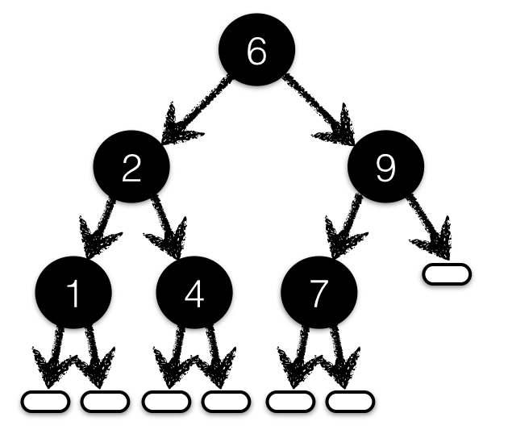

{-@ LIQUID "--short-names" @-}
{-@ LIQUID "--reflection" @-}
{-@ LIQUID "--ple" @-}
module SearchTree where
ok, bad :: () -> BST Int String
lem_get_eq :: (Ord k) => BST k v -> k -> v -> Proof
{-
{-@ lem_get_eq :: m: -> key:_ -> val:_ ->
{ get (set m key val) key = Just val }
@-}
lem_get_eq (Node k v l r) key val
| key == k = ()
| key < k = lem_get_eq l key val
| otherwise = lem_get_eq r key val
lem_get_eq Leaf _ _ = ()
-}
Binary Search Trees

At each node with value key
Left subtree nodes are less thankey
Right subtree nodes are greater thankey
Binary Search Trees
data BST k v = Leaf
| Node { mKey :: k
, mVal :: v
, mLeft :: BST k v
, mRight :: BST k v }
ok _ = Node 6 "six"
(Node 2 "two"
(Node 1 "one" Leaf Leaf)
(Node 4 "four" Leaf Leaf)
)
(Node 9 "nine"
(Node 7 "seven" Leaf Leaf)
Leaf
)
Legal Binary Search Trees
{-@ data BST k v = Leaf
| Node { mKey :: k
, mVal :: v
, mLeft :: BST k v
, mRight :: BST k v
}
@-}
bad _ = Node 6 "six"
(Node 2 "two"
(Node 1 "one" Leaf Leaf)
(Node 4 "four" Leaf Leaf)
)
(Node 9 "nine"
Leaf
(Node 7 "seven" Leaf Leaf) -- NO! key 7 on rhs of 9
)
Exercise:Refine the type to only allow legal BST (e.g. reject bad)
Lookup a Value in a BST
Classic Recursive Traversal
{-@ reflect get @-}
get :: (Ord k) => BST k v -> k -> Maybe v
get (Node k v l r) key
| key == k = Just v
| key < k = get l key
| otherwise = get r key
get Leaf _ = Nothing
Update a Value in a BST
Classic Recursive Traversal
{-@ reflect set @-}
set :: (Ord k) => BST k v -> k -> v -> BST k v
set (Node k v l r) key val
| key == k = Node key val l r
| key > k = Node k v (set l key val) r
| otherwise = Node k v l (set r key val)
set Leaf key val = Node key val Leaf Leaf
Exercise: Oops. Not so classic. What's up?
What Theorems Shall we Prove?
Looks like the type checker automatically verifies legal invariant!